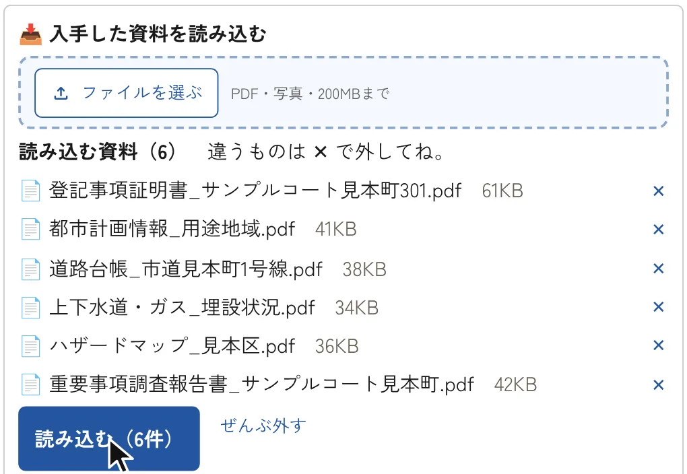
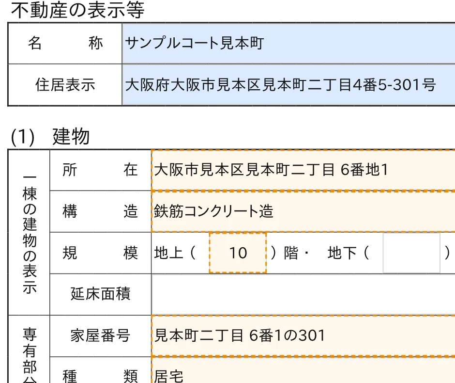
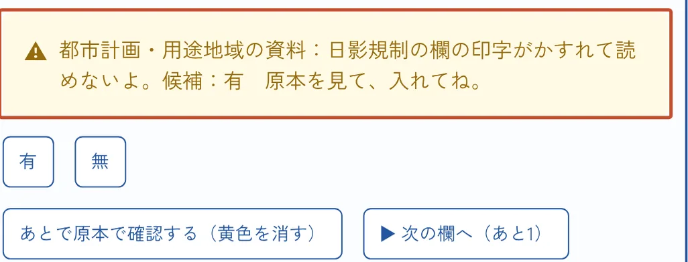
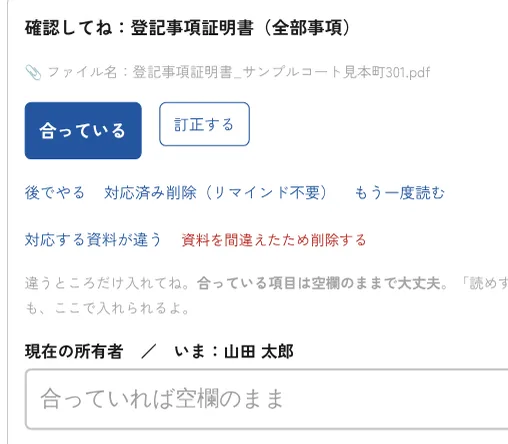
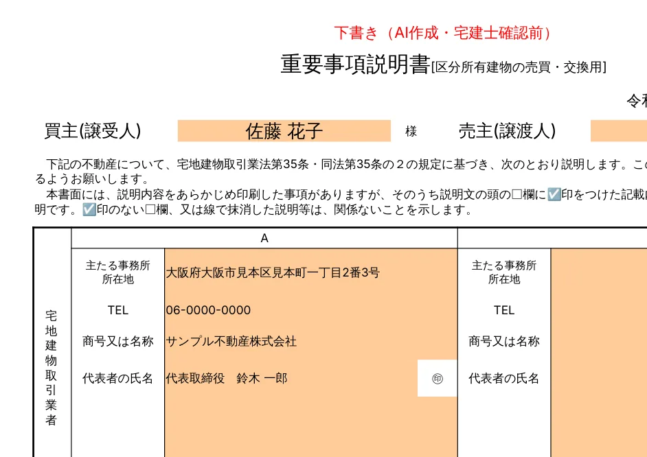
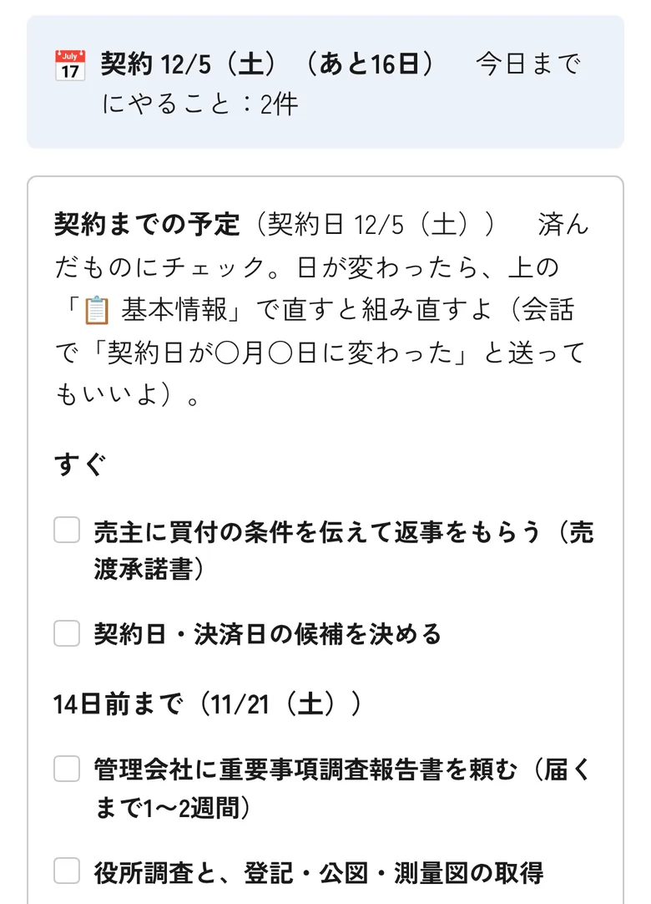
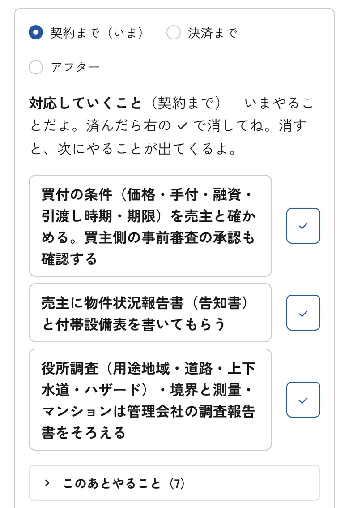
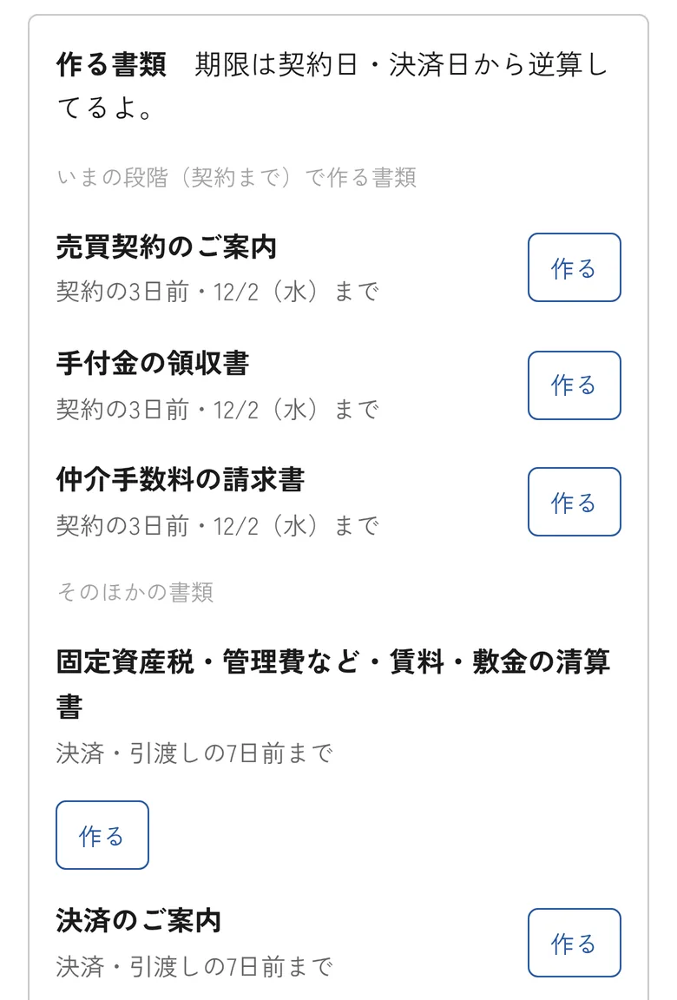
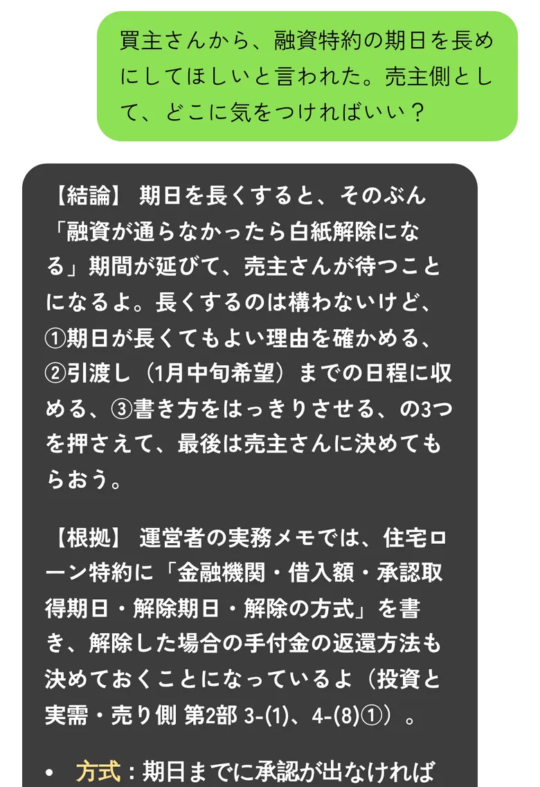
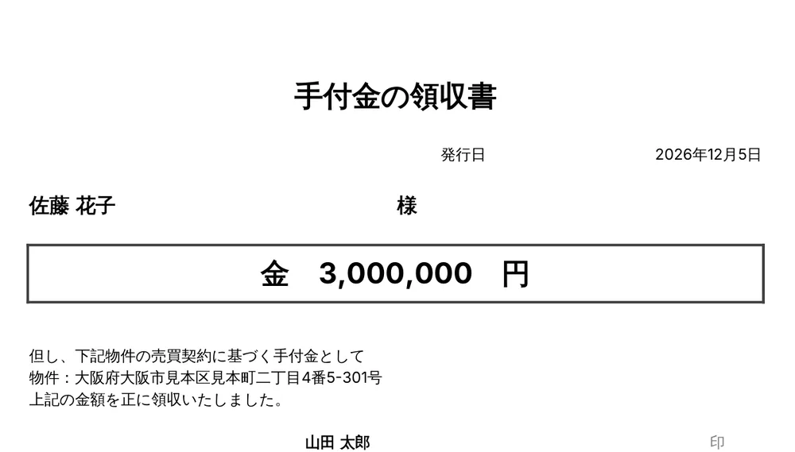

売買仲介の営業・宅建士の方へプレリリース中
資料がそろっていれば、重説の欄の7〜8割は資料から入り、あなたは見くらべて確かめるだけ。契約から決済までの「写す・逆算する・打ち直す」が、「確かめる」に変わります。
いま登記簿や役所の資料を横に置いて、重説に1欄ずつ打ち込む。
これから資料を入れると、資料にある欄に値が入る。あなたは見くらべて確かめ、資料に無い欄だけ入れる。
いま契約日が決まるたびに、何日前に何をするかを自分で逆算する。
これから契約日を伝えると、予定が期限つきで並ぶ。毎朝、案件を開くと今日の予定が出る。
いま領収書・清算書・請求書のたびに、宛名と金額を Excel に打ち直す。
これから案件の情報が入った状態で、直せる Excel に。お客様へのご案内も作れる。
いま迷ったとき、すぐ聞ける先輩がいない。
これから会話で聞くと、結論・根拠・やること・確認先の形で答えが返る。
※ 7〜8割は、役所調査の資料・登記事項証明書・重要事項調査報告書などがそろっている場合の目安です。物件の種類や資料によって変わります。
資料を入れる。色を見て確かめる。Excel で出す。画面は、すべて実物です。
役所や管理会社で集めた資料を、そのまま入れます。PDF でも、スマホで撮った写真でも読めます。並べてから「読み込む」を押すので、入れ間違えた資料は読む前に外せます。

読み取った値は、重説の書式の当てはまる欄に入ります。どの欄を見ればいいかは、色で分かります。
確かめる欄は「次へ」で順番に回れるので、どこまで見たか分からなくなりません。

かすれて読めない欄は空けたまま、黄色で知らせます。「印字がかすれて読めないよ。原本を見て、入れてね」と、理由も出ます。その場で選んで入れられます。

登記簿などの値は、入れた資料を横に開いて見くらべ、「合っている」を押すまで確定しません。違う所だけ、項目ごとに直せます。

書式に見えている中身が、そのまま Excel（.xlsx）になります。最後に手で直せます。書式は、全宅式と全日式から選べます。
Excel には、全項目の値・状態・根拠の一覧（「項目別の根拠」のシート）が付きます。紙の上には「下書き（AI作成・宅建士確認前）」と入ります。

資料に載っていない欄は、書式の上で押して入れます。□ のチェックは押すだけ、文字・数字・日付はその場で入力。業者・宅建士の欄は会社の設定から、代金・手付金は案件の情報から入ります。特約は、自社の特約集から選んで反映できます（AI は特約をおすすめしません。決めるのは営業です）。
重説は、間違いが許されない書類です。だから、AI が決めるのではなく、人が確かめて決める流れにしています。
もう1つの部屋「案件進捗・書類アシスタント」が、契約から決済までの段取りを手伝います。案件を作ってマイソクを入れると、物件名・住所などを読み取ります。ここで決まった金額や当事者は、重説の書式にもそのまま入ります。
「契約日は12月5日」と伝えるだけ。何日前までに何をするかが、期限つきで並びます。毎朝、案件を開くと今日の予定が出ます。

済んだら ✓ で消すと、次のやることが上がってきます。買主側・売主側・両手、実需・収益物件で、出てくる項目が変わります。

領収書・清算書・請求書・お客様へのご案内を、案件の情報から作ります。いつまでに作るかも出ます。

結論・根拠・やること・確認先の形で答えます。入れた資料の中身も、開いて「何ページに何と書いてあるか」を答えます。

画面は、スマホで開いたところです（見本の案件）。パソコンでは、会話と一覧を横に並べて使えます。

宛名・金額・日付が入った状態で出るので、最後に手で直せます。
どれも実物の画面を撮ったものです。音は出ません。
資料を入れてから、Excel で出すまで。
マイソクを入れてから、予定・やること・書類・会話まで。
住所からの下調べ、「次へ」で順番に確認、特約集、スマホでの表示など7つ。
資料の中身を開いて答える、お客様へのご案内、朝の予定、断ることなど7つ。
動画の物件・人物・会社は架空の見本です。読み取りや返事の待ち時間は短くしています。
使い方と料金をご案内します。料金は、月に扱う件数に合わせた月額のプランです（月1件から）。
会社の情報（商号・免許番号・宅建士）を入れて、重説の書式（全宅式・全日式）を選びます。会社の情報は、重説の業者欄や書類に自動で入ります。
案件を作ってマイソクを入れると、物件名・住所・価格・元付業者などを読み取ります。あとは、資料を入れながら進めるだけです。
いいえ。資料がそろっていれば、7〜8割の欄は資料から入ります（目安）。読めない所や確かめる所は、色で知らせます。資料に載っていない欄は、書式の上で押して、その場で入れます。
最後の確認と重要事項の説明は、宅地建物取引士が行います。
あります。だから、任せきりにしない作りにしています。登記簿などの値は、資料と見くらべて「合っている」を押すまで確定しません。読めない所は、推測で埋めずに知らせます。
役所調査の資料の値は欄に直接入りますが、色で見分けられ、その場で直せます。Excel には全項目の値・状態・根拠の一覧が付くので、最後に資料と照らし合わせてください。
PDF と写真（JPG・PNG・HEIC など）を読めます。スマホで撮った写真でも大丈夫です。
登記事項証明書、都市計画・用途地域の資料、道路台帳、上下水道・ガスの資料、ハザードマップ、建築計画概要書、管理規約、重要事項調査報告書、マイソク、買付証明書、告知書・付帯設備表などに対応しています。
重説は、全宅式・全日式の書式で出せます。領収書・清算書・請求書などは、用意している書式の Excel で出るので、最後に手で直せます。
自社の書式（Excel・Word）に書き込む機能は、準備中です。
売買契約書づくりは、準備中です。いまは、重説と、契約・決済まわりの書類（領収書・清算書・請求書・ご案内）を作れます。
いまは売買の仲介向けです。賃貸の重説づくりには、まだ対応していません。
資料・会話・案件の内容は、AI の学習にも広告にも使われません。案件と資料は日本で保存し、アカウントごとに分けています。読み取りに使う AI（米国 Anthropic 社の Claude）に送った内容は、原則30日以内に削除されます。
マイナンバーが写った資料は、受け取りません。くわしくはプライバシーポリシーをご覧ください。
月に扱う件数に合わせた、月額のプランです（月1件から）。先行利用のご相談のときにご案内します。
パソコンでもスマホでも、ブラウザだけで使えます。インストールはいりません。
予定・やること・書類・会話はスマホでも見やすく使えます。重説の書式は欄が多いので、パソコンの画面が見やすいです。
いまプレリリース中です。「うちの業務の流れに合うか見てみたい」という段階でもかまいません。下のフォームから、お気軽にご相談ください。
担当から、メールでご連絡します。
フォームが使えないときは、sonaure100@gmail.com へメールでお送りください（件名は「契約Sonaureくん」）。